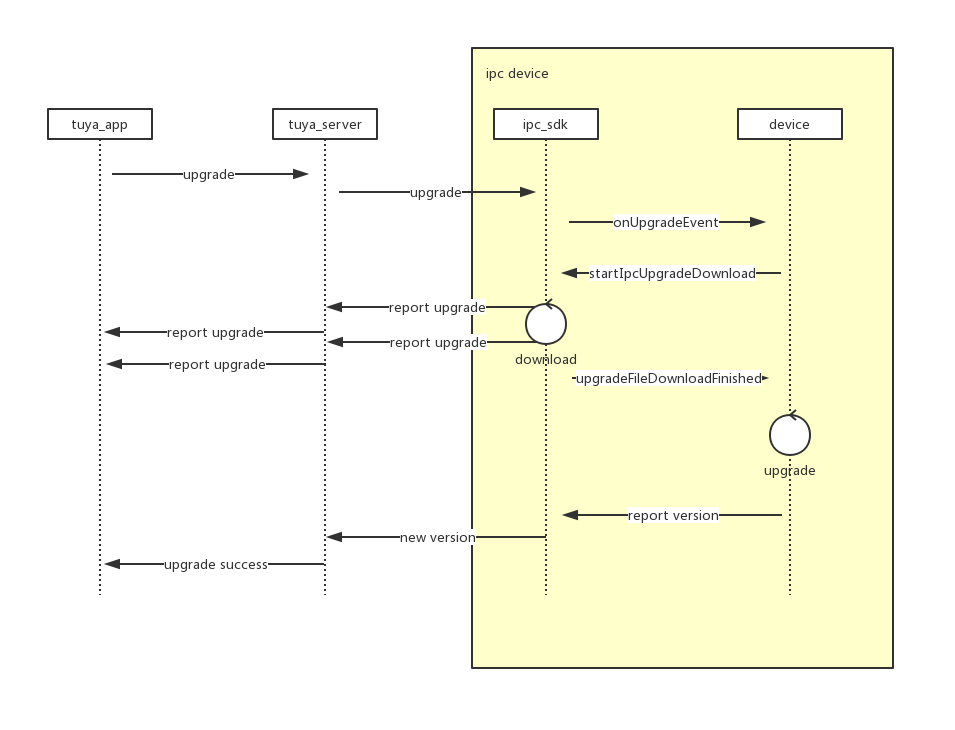

升级接口说明
UML

- tuya app 发现可以升级后，会提示用户升级，当用户点击升级时会回向 tuya server 发送设备升级请求
- tuya server 转发 升级请求至 ipc_sdk
- ipc_sdk 收到升级推送会触发
com.tuya.smart.aiipc.trans.UpgradeEventCallback#onUpgradeEvent接口 - devcie (ipc sdk 适用放) 此时可以决定是否升级，如果升级调用
((IUpgradeManager) IPCServiceManager.getInstance().getService(IPCService.UPGRADE_SERVICE)).startIpcUpgradeDownload()接口，触发 ipc_sdk 升级文件下载过程. ipc_sdk 会通过 tuya_server 像 tuya_app 汇报升级情况 - 当 ipc_sdk 下载完成(成功或失败) 会回调
com.tuya.smart.aiipc.trans.UpgradeEventCallback#upgradeFileDownloadFinished接口，success用于表明下载升级文件是否成功 - device 通过升级文件执行升级。 升级文件是配置在后台的文件，所以文件给是，内容都要 设备 自己觉得如何使用升级文件
- device 升级成功后，需要启动 ipc_sdk ,并给他新的 版本号, 通过
com.tuya.smart.aiipc.ipc_sdk.IPCSDK#initSDK(android.content.Context context, java.lang.String ipcVersion),ipcVersion会被 ipc_sdk 检测， 如果是升级目标版本，就会上报升级成功
ipc sdk 升级相关接口注册
com.tuya.smart.aiipc.ipc_sdk.api.IUpgradeManager
用于处理和 ipc sdk 升级相关 回调注册，和功能触发((IUpgradeManager) IPCServiceManager.getInstance().getService(IPCService.UPGRADE_SERVICE)) 可以获得该接口实例
registerUpgradeCallback注册com.tuya.smart.aiipc.trans.UpgradeEventCallback用于接收 升级 和 升级文件下载完成 回调startIpcUpgradeDownload出发ipc_sdk 升级文件下载
com.tuya.smart.aiipc.trans.UpgradeEventCallback
onUpgradeEvent升级事件接口upgradeFileDownloadFinished升级文件下载完成接口
代码截图